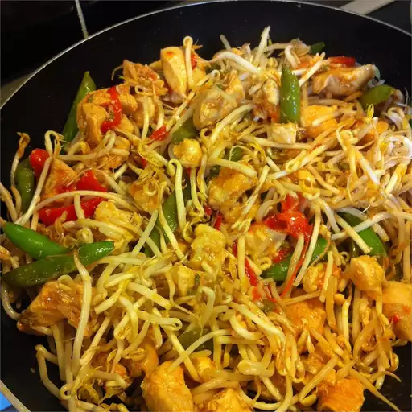

Pad Thai

Delicious and nutritious meal that can be made vegan
Made with some simple ingredients, this meal is sure to impress and leave you with leftovers for lunch the next day.
- Onion
- Frozen Veggies
- Mushrooms
- Meat (I recommend PLantasia "Roast Duck" made from gluten protein.)
- Pad Thai noodles
- Crushed Ginger, Garlic & Chilli
- Satay or Terriyaki sauce
- Olive Oil
- Add oil to pan
- Chop onion and throw into frying pan on medium heat
- Put approximately 500-750g of frozen veggies in the pan and put the lid on the pan.
- Put a pot of water enough to cover the noodles on to boil
- Add a teaspoon of crushed garlic, ginger and chilli, and mix it into the veggies
- Chop mushrooms into big chunks
- Stir the veggies and push them to one side of the pan, leaving the lid off if the veggies are defrosted
- Add Noodles to pot of water when it reaches boiling
- Add oil to the empty side of the pan and add mushrooms, dribbling a bit of oil on top of them and stirring the mushrooms, keeping them seperate for now
- Stir veggies and add oil to any dry spots under them
- Stir noodles to prevent them sticking to each other or the pot
- Chop meat into medium chunks and add to the pan, seperating them from the mushrooms by creating a little empty quarter with oil
- Save the noodles when they are done, tipping them into a collinder and keeping seperate
- Stir the meat, trying to crisp up at least one side before mixing with the mushrooms
- Add the sauce to the meat and mushroom mix, using about a third of the sachet if you have one
- After 1 min, mix the meat and mushrooms into the veggie mix and add another third of the sachet of sauce
- Add the noodles to the mix, adding the rest of the sauce and adding a bit of water by cleaning out the sachet to get the rest of the sace out
- Mix and serve